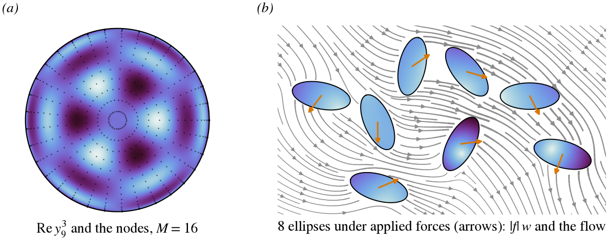
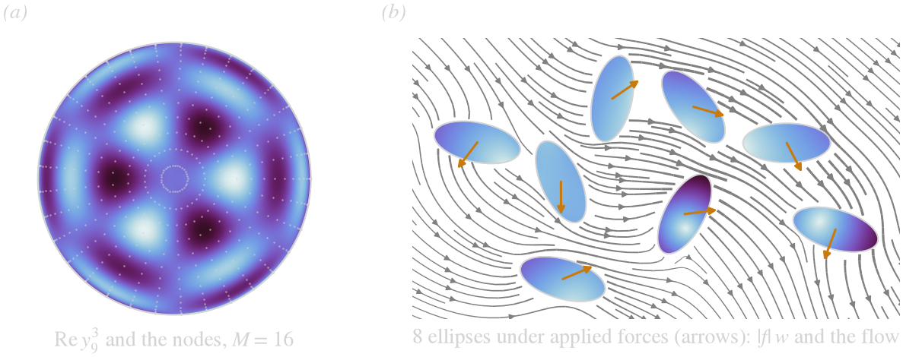

ProjectedSphericalHarmonics.jl


(a) $\mathrm{Re}\, y_9^3$ with the grid of disk(16). (b) Eight ellipses ($a/b = 1/0.45$, $M = 16$) under unit forces (arrows) and random torques, from suspension_mobility_solve: each body is colored by $|f|\,w$, its force density without the edge singularity, and the streamlines show the flow they induce (by the closed form near each body).
ProjectedSphericalHarmonics solves integral equations on flat open surfaces (a disk, an ellipse, or a domain bounded by a smooth curve, in the plane $z = 0$) to spectral accuracy. It uses one basis throughout: the projected spherical harmonics (PSH), spherical harmonics on the hemisphere projected onto the unit disk,
\[y_\ell^m(r, \theta) = N_\ell^m\, P_\ell^{|m|}\!\left(\sqrt{1 - r^2}\right) e^{im\theta}.\]
On the unit disk they diagonalize the single layer and hypersingular operators of the 3D Laplacian, with eigenvalues in closed form, and they carry the edge behavior of the solutions. With $w = \sqrt{1 - r^2}$, the density of a first-kind equation behaves like $1/w$ at the rim and a double-layer density like $w$. Writing both as a PSH series times a power of $w$ gives exponential convergence, with no special quadrature at the edge. The package uses this to provide:
- Laplace layer potentials and their inverses. The single layer $\mathcal{S}$, the hypersingular operator $\mathcal{N}$, their inverses, and the Poisson problem on the disk, all in a few FFTs and recurrences.
- Stokes flow in the plane. The single layer of in-plane Stokes flow on a surface between two fluids, its inverse, and the mobility problem of one rigid body: the velocity and rotation rate under given forces, torque and background flow.
- Non-circular domains. Ellipses, by an affine map of the disk, and domains bounded by a smooth curve, by a conformal map (experimental). The singular part of each operator stays the disk's, so the accuracy is still spectral.
- Many-body suspensions. Mobility problems for many disks or ellipses at once, solved with GMRES. The interactions between bodies are summed by Ewald splitting with NUFFTs or by FMM, and corrected by a closed form where bodies come close.
In one call
using ProjectedSphericalHarmonics
D = disk(32) # the unit disk, degrees and orders up to 32
σ = 𝒮⁻¹(1, D) # charge density of a disk held at unit potential
integral(σ, D) # its total charge: 8 (the capacitance of a disk, 8ε₀a), to 1e-12
f = 𝒮_st⁻¹((1.0, 0.0), D) # force density on a disk translating at unit speed
integral(f[1], D) # its drag: 16/3 under a stress-free surface, to 1e-12What it offers
| Discretizations | disk(Mℓ, Mₘ), ellipse(a, b, Mℓ, Mₘ), domain(γ, Mℓ, Mₘ) (a conformal map from samples of the boundary; experimental) |
| Basis | ylm, λlm, Nlm; transforms psh and ipsh (even or odd parity), upsample, trace, integral |
| Laplace | single layer 𝒮, hypersingular 𝒩, their inverses, 𝒮𝒩⁻¹; Poisson Δ⁻¹; volume potentials 𝒱, ℬ, 𝒯; shape derivatives δ𝒮, δ𝒩, δ𝒱, δℬ |
| Differential operators | ∂ζ, ∂ζ̄, ∂x, ∂y, grad, div, lap, ∂n (on the disk) |
| Stokes | single layer 𝒮_st and its inverse, stokes_mobility_matrix, stokes_mobility_solve; two viscosities, μ_bottom and μ_top |
| Suspensions | suspension_mobility_solve, suspension_velocity_solve, suspension_velocity_eval; fast sums by Ewald + NUFFT or FMM3D, closed-form close evaluation for disks and ellipses |
Where to go next
- Getting started: installation, a discretization, transforms, the Laplace and Stokes operators, non-circular domains, and suspensions.
- Method: the basis, the Laplace and Stokes operators, the maps to other domains, the suspension solver, and the limits.
- Examples: scripts that solve against exact solutions.
- API reference and the Code map: every function, and which feature runs it.